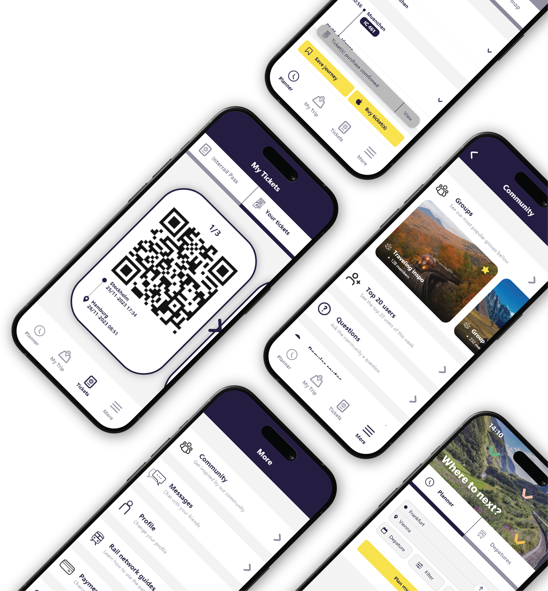
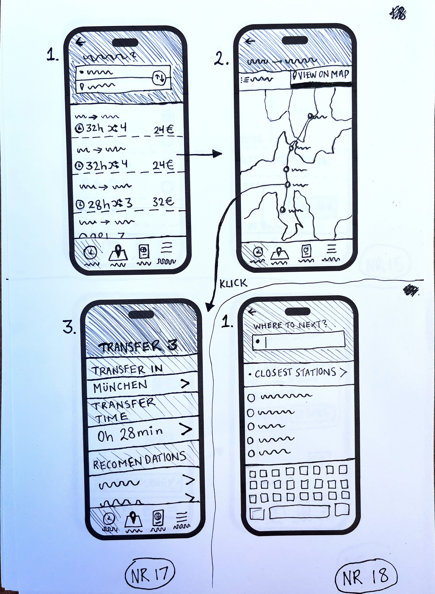
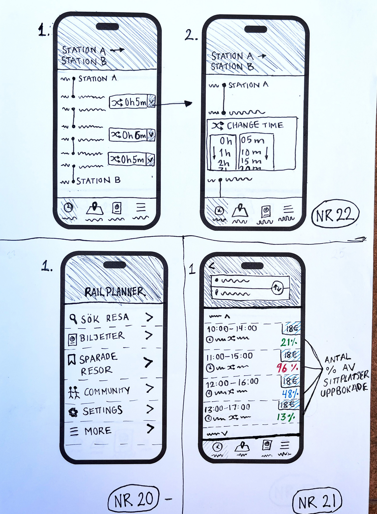
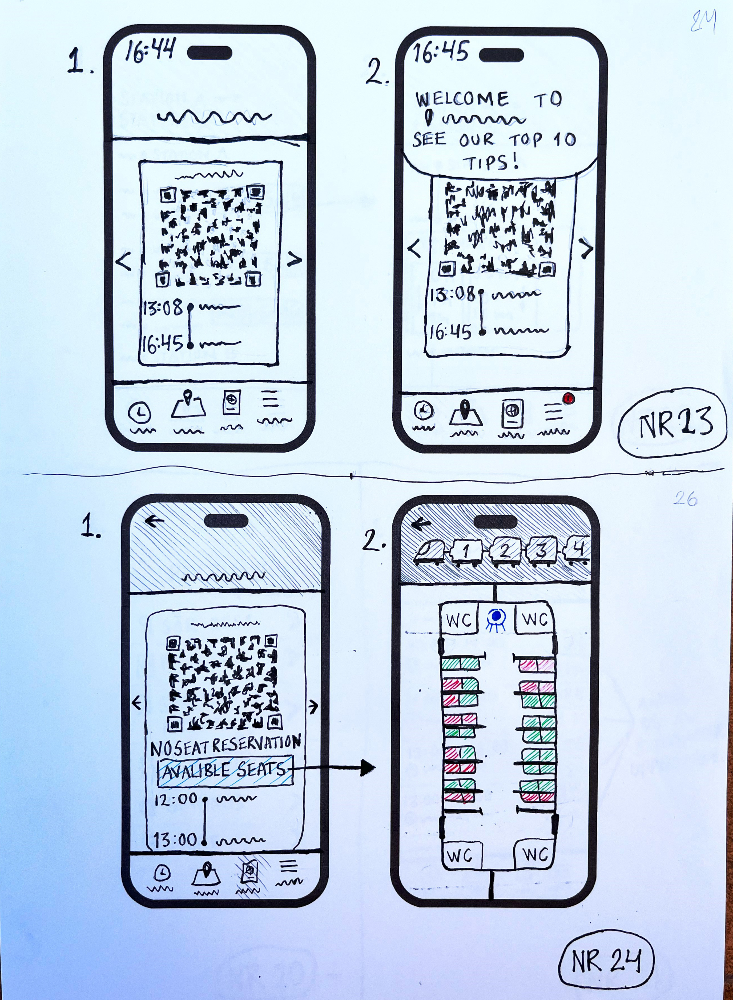

This project focused on Rail Planner, an existing mobile app
designed to help users plan train journeys across Europe. It
allows travelers to search for routes, find train schedules, and
access their Interrail Pass digitally. My approach involved a
thorough analysis of the app’s current user experience and
visual design, with the goal of identifying opportunities for
improvement.
project duration:
4 weeks
10+ screens
tools:

about the project
The project began with an in-depth analysis of the Rail Planner app
to identify key usability issues. This was followed by an extensive
sketching process with idea generation and analog mockups focusing
on the most critical problem areas.
Based on the insights, I developed an elevator pitch and created a
final digital prototype showcasing proposed improvements. The
project concluded with an oral presentation and personal reflection
on the design process and outcomes.
selection of sketches



problem statement
While the app offers a user-friendly and visually appealing
interface, my exploration revealed several gaps in functionality
that affect the overall user experience. For example, users cannot
buy tickets directly within the app and must instead leave the app
to visit the company’s website. This interrupts the flow and can be
frustrating, especially when traveling under time pressure.
Additionally, limitations in the map and search functions make it
harder for users to find stations or plan trips in a more flexible
way. The lack of language support and inconsistent feedback, such as
unclear error messages when trains are fully booked, also risk
confusing users or causing unnecessary delays.
Mockup
elevator pitch
final product
final protype
behind the process
conclusion
Through this project, I explored how small yet thoughtful design
interventions can significantly improve the user experience of an
already established app. By addressing key pain points—such as
limited booking capabilities, lack of real-time station data, and a
disconnected user journey—I proposed features that make the app more
intuitive, connected, and community-driven. The result is a more
seamless and empowering travel experience for users navigating
Europe by rail.